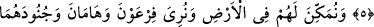

MÛSA İLE FİRAVUN’UN HABERLERİ
Rahmân ve Rahîm (olan) Allâh’ın adıyla.
1. Tâ. Sîn. Mîm.
2. Bunlar, apaçık Kitab’ın âyetleridir.
3. Îman eden bir kavim için (faydalı olmak üzere) Mûsâ ile Firavun’un haberinden
bir kısmını sana gerçek şekliyle nakledeceğiz.
4. Firavun, (Mısır) toprağında gerçekten azmış, halkını çeşitli zümrelere
bölmüştü. Onlardan bir zümreyi güçsüz buluyor, bunların oğullarını boğazlıyor,
kızlarını ise sağ bırakıyordu. Çünkü o bozgunculardandı.
5. Biz ise, o yerde güçsüz düşürülenlere lütufta bulunmak, onları önderler
yapmak ve onları (mukaddes topraklara) vâris kılmak istiyorduk.
6. Ve o yerde onları hakim kılmak; Firavun ile Hâmân’a ve ordularına, onlardan
(İsrailoğullarından gelecek diye) korktukları şeyi göstermek (istiyorduk).
“ (Tâ. Sîn. Mîm.)”, yemine işâret eder. “Tâ” Allah Teâlâ’nın güç ve kuvvetine;
habîbi Muhammed Mustafa (s.a.)’in kalb-i şerifinin Allah sevgisi dışındaki şeylerden
pâk ve saf; tevhid ehlinin sırlarının mâsivallaha baş eğmekten temiz ve uzak olduğunu
gösterir. “Sîn” Allah’ın sevdiği kullarıyla arasındaki sırr-ı ilâhîyeye delâlet eder.
“Mîm” Allah Teâlâ’nın bütün mahlûkatının ihtiyaçlarını karşılayıp pay ve nasiblerine
göre nimetlerini onlara taksim ettiğine işâret eder. Nitekim, et-Te’vîlâtü’n-Necmiyye’de
de bu şekilde yorumlanmıştır.
İmam Kuşeyrî der ki: “Tâ”, âbidlerin nefislerinin ağyâra ibâdet etmekten; âriflerin
kalplerinin, Cebbâr olan Allah Teâlâ’dan gayrısına tâzim etmekten; muhiblerin